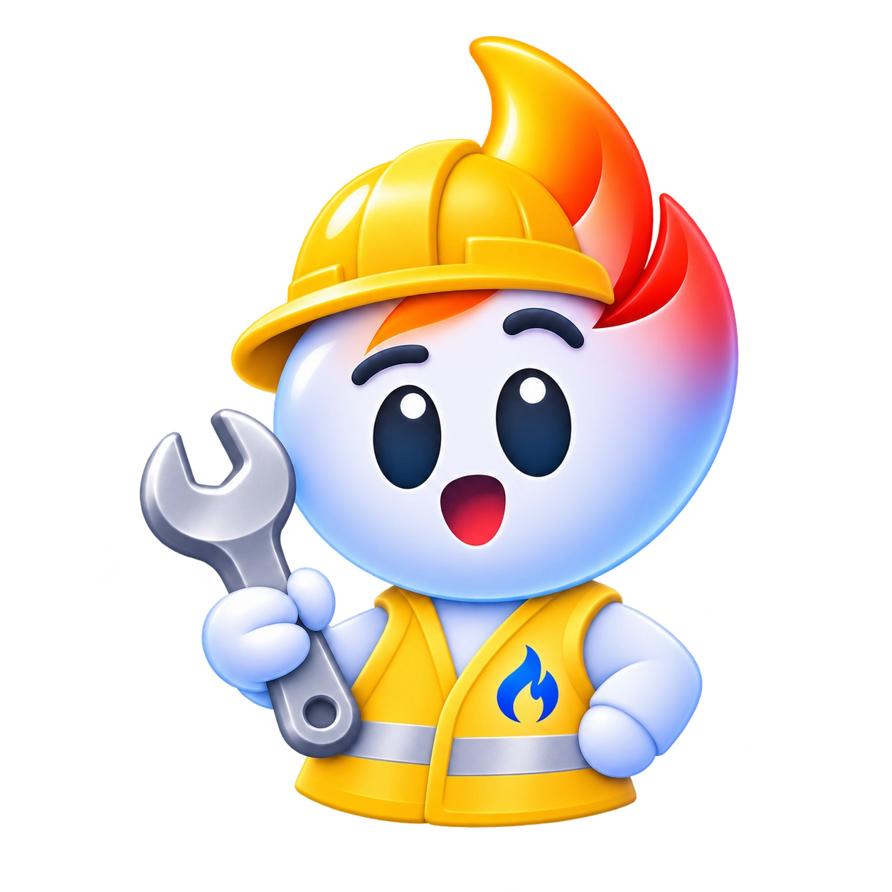

ТИМЧАСОВА ПЕРЕРВАТехнічні роботи
Ватрик працює над покращенням VATRA. Незабаром соціальна мережа знову буде доступна. Дякую за терпіння!

ТИМЧАСОВА ПЕРЕРВАВатрик працює над покращенням VATRA. Незабаром соціальна мережа знову буде доступна. Дякую за терпіння!